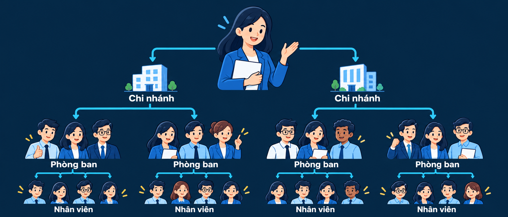

Lưu rải rác, khó tra cứu
Hợp đồng nằm ở email, Excel và giấy tờ; cần là lại phải tìm.
Theo dõi hợp đồng, luồng duyệt và phân quyền trên một hệ thống.


KẾ TOÁN
NHÂN SỰ
TÀI SẢN
ẨM THỰC
ẨM THỰC
ỨNG DỤNG KARAOKE
10+phần mềm, ứng dụng khác
04 / DỰ ÁN I-COOL STAFF
Từ nhân viên, thời gian làm việc đến vai trò và phạm vi sử dụng phần mềm.

Quản lý nhân viên theo từng chi nhánh, phòng ban. Thông tin nhân sự được gắn với đúng đơn vị công tác.
Sắp xếp ca làm, theo dõi giờ làm việc và quản lý công của từng nhân viên.
Thiết lập cấp bậc, vai trò và quyền hạn. Xác định phạm vi sử dụng phần mềm theo đơn vị và trách nhiệm.
CASE STUDY / KẾ TOÁN I-COOL
Từ trao đổi rời rạc đến kiểm soát hồ sơ trên phần mềm.
Bấm vào một slide để chuyển đến · G hoặc Esc để đóng